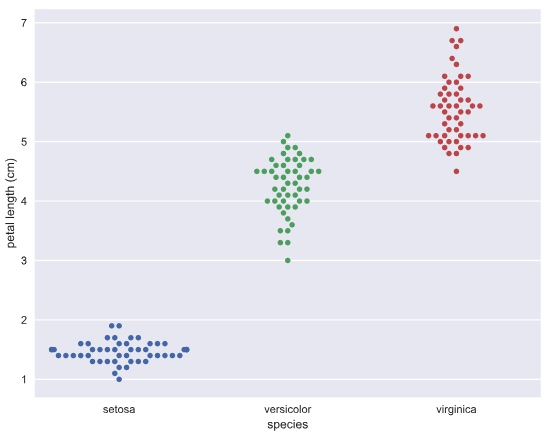
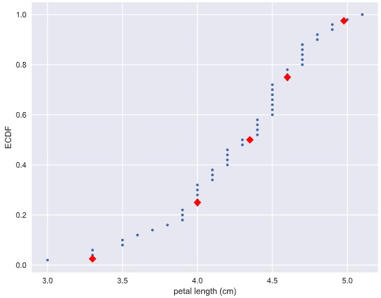

Graphical exploratory data analysis
Histogram
# Import plotting modules
import matplotlib.pyplot as plt
import seaborn as sns
# Set default Seaborn style
sns.set()
# Compute number of data points: n_data
n_data = len(versicolor_petal_length)
# Number of bins is the square root of number of data points: n_bins
n_bins = np.sqrt(n_data)
# Convert number of bins to integer: n_bins
n_bins = int(n_bins)
# Plot histogram of versicolor petal lengths
_ = plt.hist(versicolor_petal_length, bins = n_bins)
# Label axes
_ = plt.xlabel('petal length (cm)')
_ = plt.ylabel('count')
# Show histogram
plt.show()
Bee swarm plot
# Create bee swarm plot with Seaborn's default settings
_ = sns.swarmplot(x='species', y = 'petal length (cm)', data = df)
# Label the axes
_ = plt.xlabel('species')
_ = plt.ylabel('petal length (cm)')
# Show the plot
plt.show()

Empirical cumulative distribution functions
def ecdf(data):
"""Compute ECDF for a one-dimensional array of measurements."""
# Number of data points: n
n = len(data)
# x-data for the ECDF: x
x = np.sort(data)
# y-data for the ECDF: y
y = np.arange(1, (n+1)) / n
return x, y
# Compute ECDFs
x_set, y_set = ecdf(setosa_petal_length)
x_vers, y_vers = ecdf(versicolor_petal_length)
x_virg, y_virg = ecdf(virginica_petal_length)
# Plot all ECDFs on the same plot
_ = plt.plot(x_set, y_set, marker='.', linestyle='none')
_ = plt.plot(x_vers, y_vers, marker='.', linestyle='none')
_ = plt.plot(x_virg, y_virg, marker='.', linestyle='none')
# Annotate the plot
plt.legend(('setosa', 'versicolor', 'virginica'), loc='lower right')
_ = plt.xlabel('petal length (cm)')
_ = plt.ylabel('ECDF')

Another example: the dataset contains the percentage of vote for Obama for each county.
 Plot percentile on ECDF
Plot percentile on ECDF
# Specify array of percentiles: percentiles
percentiles = np.array([2.5, 25, 50, 75, 97.5])
# Compute percentiles: ptiles_vers
ptiles_vers = np.percentile(versicolor_petal_length, percentiles)
# Plot the ECDF
_ = plt.plot(x_vers, y_vers, '.')
_ = plt.xlabel('petal length (cm)')
_ = plt.ylabel('ECDF')
# Overlay percentiles as red diamonds.
_ = plt.plot(ptiles_vers, percentiles/100, marker='D', color='red',
linestyle='none')
# Show the plot
plt.show()

Quantitative exploratory data analysis
Covariance and Correlation
# Make a scatter plot
_ = plt.plot(versicolor_petal_length, versicolor_petal_width, marker='.', linestyle='none')
# Label the axes
_ = plt.xlabel('versicolor petal length (cm)')
_ = plt.ylabel('versicolor petal width (cm)')
# Show the result
plt.show()

Pearson correlation coefficient: It is a comparison of the variability in the data due to codependence(the covariance) to the variability inherent to each variable independently (their standard deviations).
Probabilistic logic and statistical inference
Given a set of data, you describe probabilistically what you might expect if you collect the same data again and again and again.